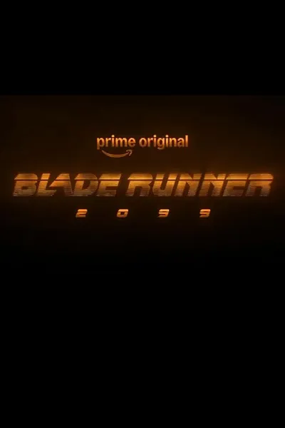

Сериал · 2026 · Киберпанк, Фантастика
Продолжение вселенной «Бегущего по лезвию» в формате сериала: прошло пятьдесят лет после событий 2049 года, корпорации укрепили власть, а вопрос «что такое человек» стал ещё сложнее. Новые герои — репликанты и люди — оказываются в гонке с системой, где память, идентичность и даже смерть стали продуктами с подпиской. Сериал наследует эстетику Вильнева и задаёт те же вопросы, только на горизонте, где технологии уже не отличить от природы.
A series continuation of the Blade Runner universe: fifty years after the events of 2049, corporations have tightened their grip, and the question 'what is a human' has grown harder. New heroes — replicants and humans — race a system where memory, identity and even death are subscription products. The series inherits Villeneuve's aesthetics and asks the same questions at a horizon where technology is indistinguishable from nature.
← Вернуться в каталог IT Movies